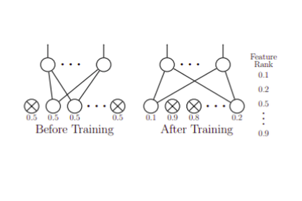

Dropout Feature Ranking for Deep Learning Models

Deep neural networks (DNNs) achieve state-of-the-art results in a variety of domains. Unfortunately, DNNs are notorious for their non-interpretability, and thus limit their applicability in hypothesis-driven domains such as biology and healthcare. Moreover, in the resource-constraint setting, it is critical to design tests relying on fewer more informative features leading to high accuracy performance within reasonable budget. We aim to close this gap by proposing a new general feature ranking method for deep learning. We show that our simple yet effective method performs on par or compares favorably to eight strawman, classical and deep-learning feature ranking methods in two simulations and five very different datasets on tasks ranging from classification to regression, in both static and time series scenarios. We also illustrate the use of our method on a drug response dataset and show that it identifies genes relevant to the drug-response.